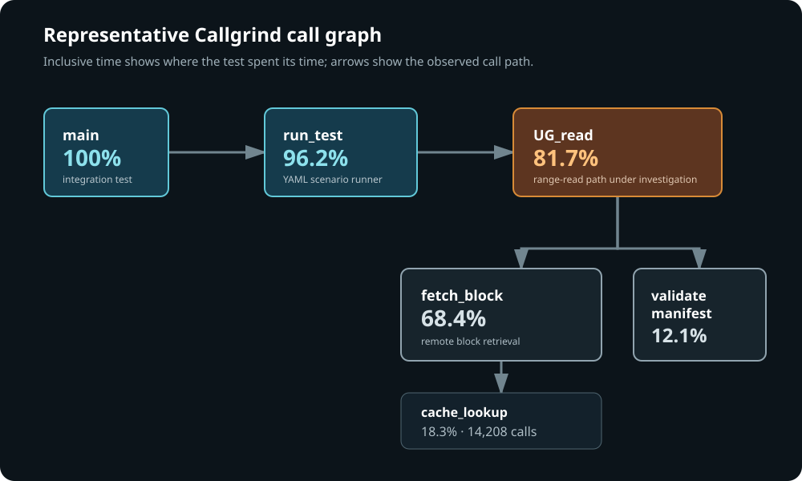

The real problem was recreating the failure
Syndicate ran across different platforms, storage services, and dependency versions. A test might fail in Jenkins, but reproducing that exact combination on a developer’s machine could take longer than finding the bug.
We connected CI evidence, packaged builds, infrastructure as code, portable test definitions, profiling, and interactive debugging into one path. The exact test environment—and the evidence needed to investigate it—became available to any developer almost immediately.
rebuild packages
run integration tests
TAP, logs, Valgrind, call graphs
Ansible + containers
YAML → DDD/GDB
1. Publish evidence people could act on
Every commit rebuilt installable packages and ran the integration suites. Jenkins exposed failed TAP tests first, then detailed test output, artifacts, build history, repository changes, Valgrind findings and stack traces, and call graphs with per-routine timing.
expected: 4096 bytes
received: end of file
Artifacts available
stdout · logs · test YAML
at UG_read(...)
by syndicate-range-read(...)
stack trace → source line
definitely lost: 0 bytes

Representative call-graph reconstruction: the visual path made it easy to see which routines dominated runtime and where to begin investigating.
Representative reconstructions based on the original demonstration transcript; they are not screenshots from the removed video.
2. Recreate the deployed system, not a developer approximation
Infrastructure as code made the failure portable. Docker defined consistent containers while Ansible configured the target hardware or virtual machines, producing repeatable environments across platforms and software constraints. Developers could select debugging dependencies and backend versions; versioned apt packages let them update or reinstall instead of manually reconstructing a build.
3. Turn the same test into the debugger
The integration tests were human-readable YAML. A developer could copy the breakpoint suggested by the CI stack trace into the exact failing test, increase verbosity, and select DDD or GDB. A helper translated that declaration into debugger behavior, including pending breakpoints for dynamically loaded code.
tasks:
- command: syndicate-range-read --offset 0 --length 4096
debugger: ddd
breakpoints:
- main
- "UG_read:source-line"Publish memory, timing, logs, and artifacts together.
The same YAML drove automation and interactive debugging.
Packages and automation recreated the real environment.